{kind=link}
Astral Concord · Melee
Astral Guardian
Open playback · idle 1 / move 4 / action 6 / defeat 6
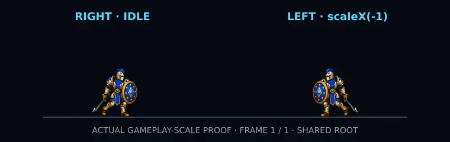
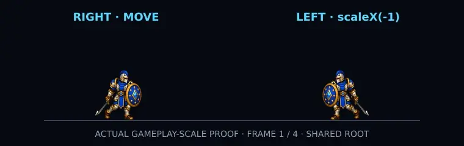
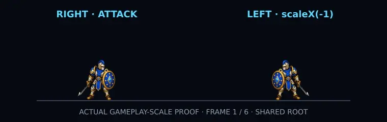
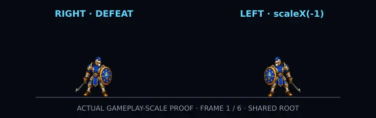
Phase 1A · Approved and closed
Owner-approved production direction · Non-playable
This is the final Phase 1A visual and production-feasibility set reflected in the project GDD: a separate landscape battlefield, exactly three structure categories, six-player color-plus-symbol ownership, and complete baked full-body entity frames.
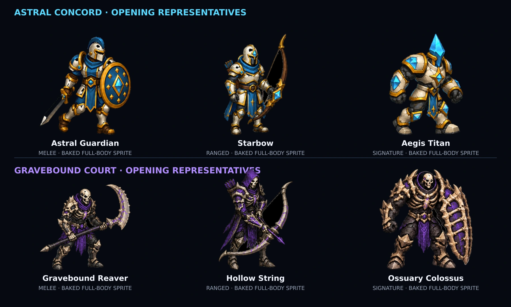
Open full size01 Landscape battlefield
The battlefield plate contains terrain only. Entities, structures, ownership marks, navigation, effects, selection feedback, and interface remain independent layers.
 Open desktop composition
Open desktop composition
 Open phone composition
Open phone composition
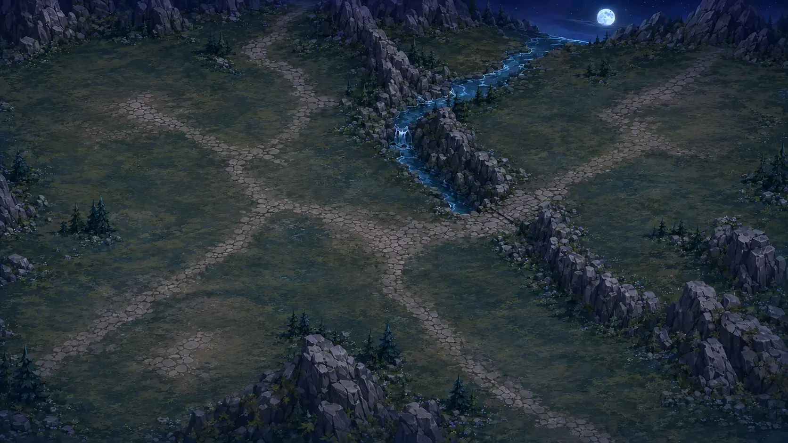
Open environment plate02 Ownership and structures
Restrained aligned masks recolor ownership surfaces without recoloring anatomy, equipment materials, bone, or category silhouettes. Every player also keeps a stable non-color symbol.
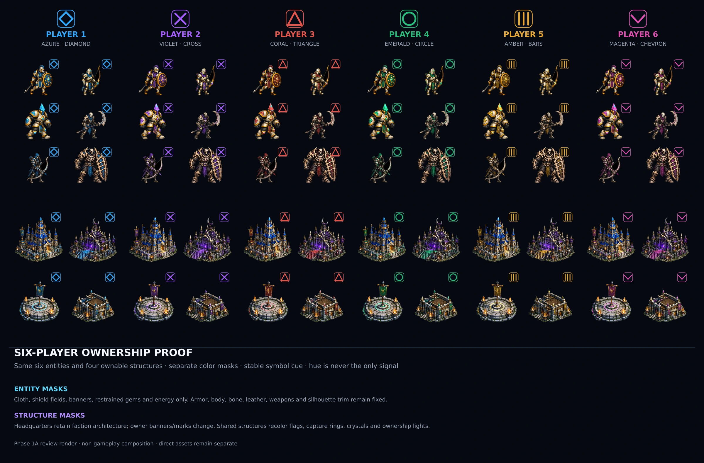
Open ownership matrix Open damage progression
Open damage progression
03 Actual-scale playback
Each entity uses one stable idle, four locked-upper-body movement frames, six coherent action frames, and six defeat frames. Canonical art faces screen-right; screen-left is the exact horizontal mirror. Simulation—not animation—owns outcomes and timing.
Playback is hidden until it is explicitly opened and can be hidden again at any time. Animated move, action, and defeat previews also fall back to each entity's held idle frame when reduced motion is requested. Every state links to its authored 760 × 240 file.
Astral Concord · Melee




Astral Concord · Ranged
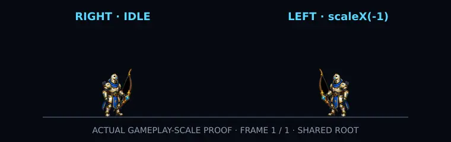
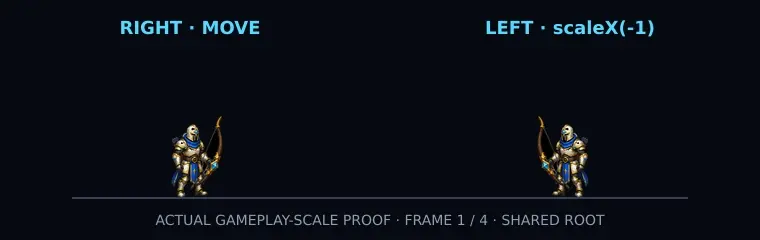
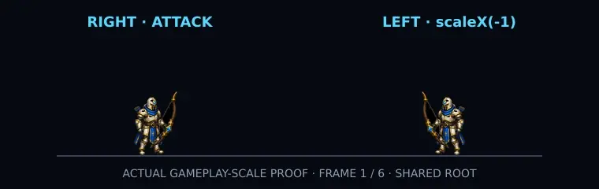
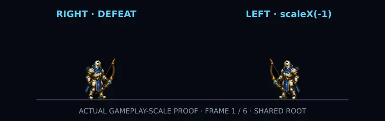
Astral Concord · Signature
Final corrected export: head, torso, hips, feet, gait, and punch all agree on screen-right.
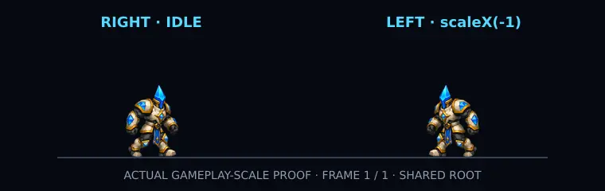
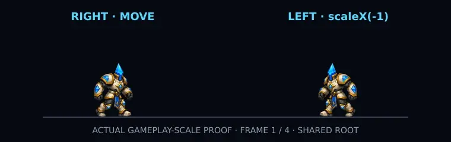
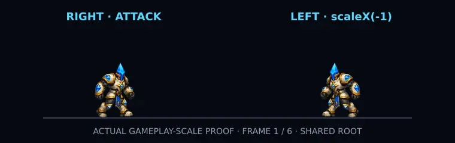
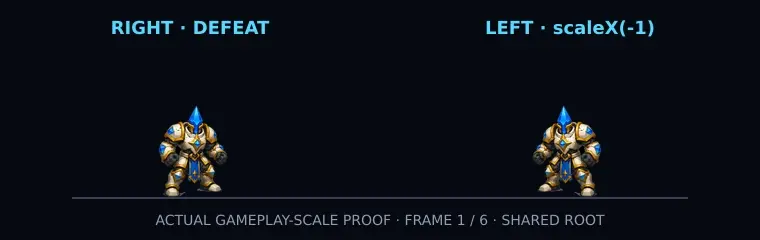
Gravebound Court · Melee
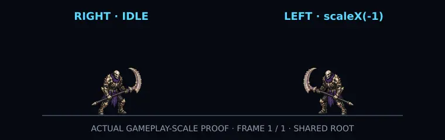
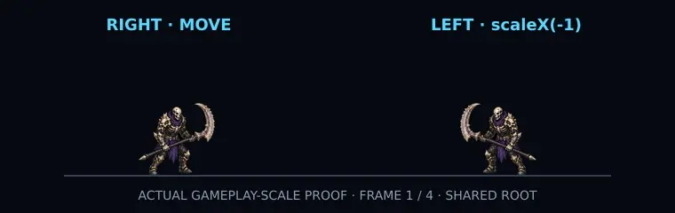
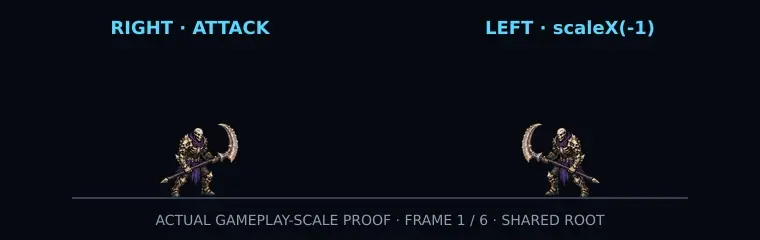
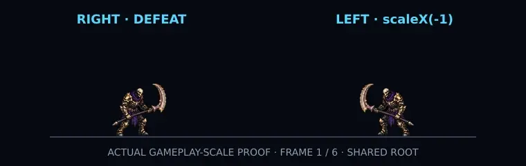
Gravebound Court · Ranged
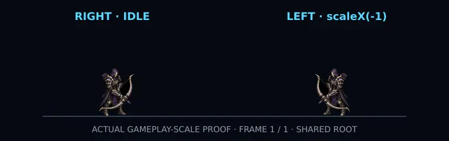
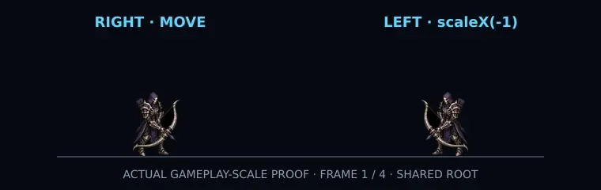
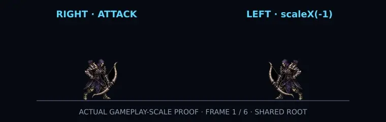
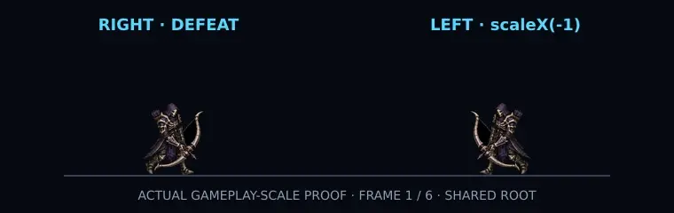
Gravebound Court · Signature
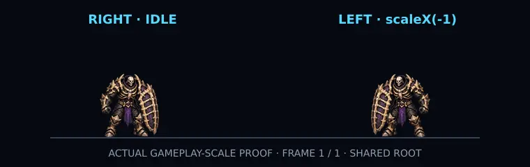
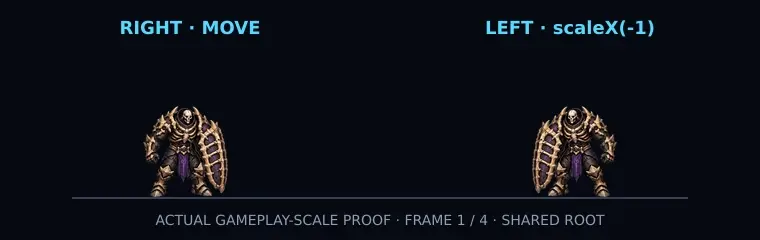
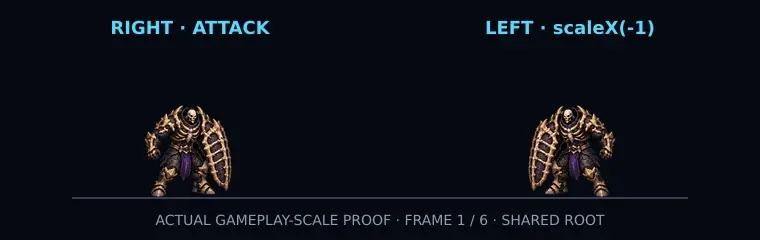
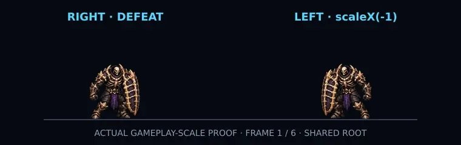
04 Frame audit
The atlas audit exposes every canonical frame for anatomy, equipment, root contact, transparency, and direction review. No limb rig, runtime anatomy deformation, independently drawn opposite facing, or independently redrawn movement upper body is used.
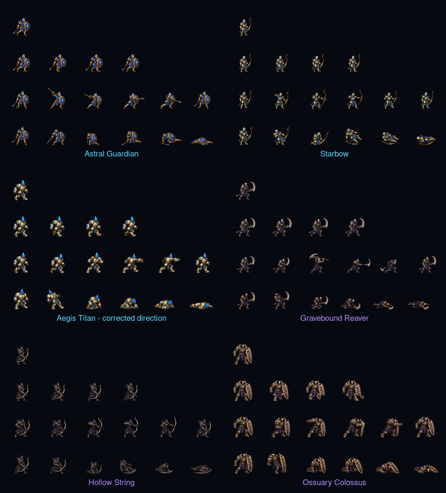
Open atlas auditscaleX(-1).Recorded owner decision · 21 August 2026
These assets lock the visible production method and Phase 1A direction. They are not a gameplay screenshot, implemented renderer, final roster, balance pass, AI proof, or release. The later Phase 1B visual lock and Phase 2 landscape/camera foundation are approved and closed; Phase 3 entity and movement work is now authorized under its own gate.
{kind=link}
{kind=link}
{kind=link}
{kind=link}
{kind=link}
{kind=link}